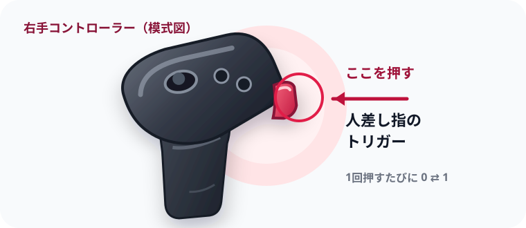
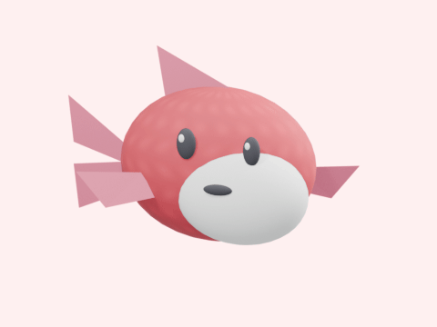

QUEST BROWSER 150.1 / WEBGPU
foveation：
設定値 0
fixedFoveationを0から始めます。VR中に人差し指のトリガーを押すたび、0と1が切り替わります。頭を動かさず、視野の端にある細線や魚の模様を比べてください。VR内の大きな数字は現在の設定値です。

APIを確認しています。
VRを開始できない場合は、Quest BrowserのWebGPU設定を確認してください。

CURRENT SETTING
設定値0のVRシーン
設定値0（最小）
APIが返した値VR開始前
操作人差し指のトリガーを押す
0はAPIで指定できる最小値で、描画処理が完全に無効になるとは限りません。数字と読取値は効果の証明ではありません。視野端の細線が切り替え前後で変わるか確かめてください。